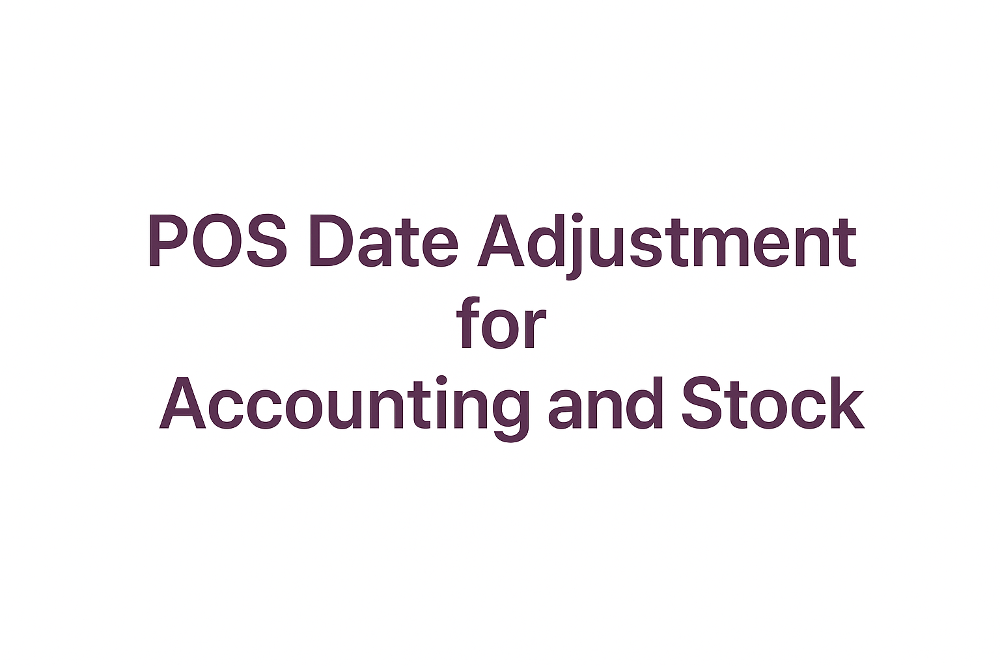
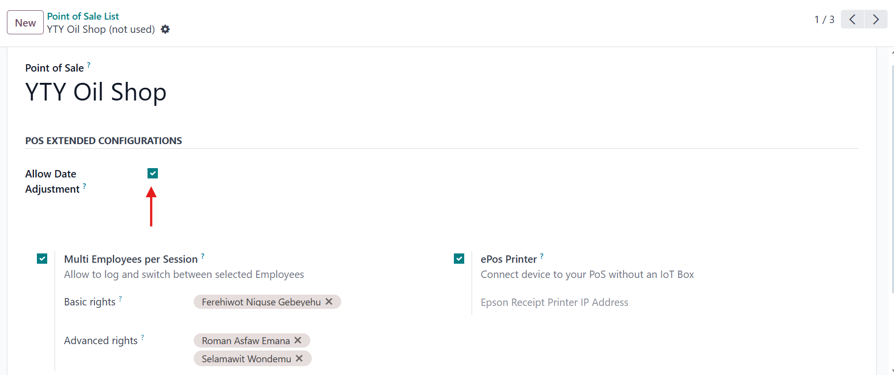
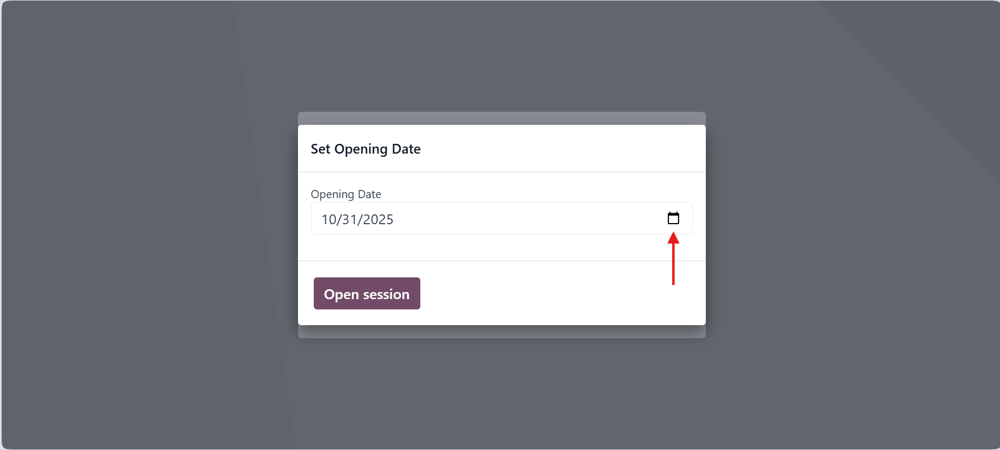
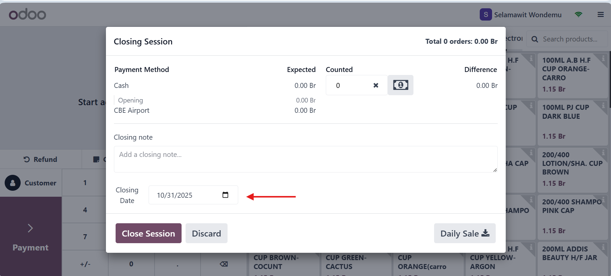

This module allows users to adjust the opening and closing dates of Point of Sale (POS) sessions in Odoo. When the date is corrected, all related accounting entries and inventory transactions are automatically updated to match the session's new closing date.
It's particularly useful when entering backlog sales data or correcting a session closed on the wrong date. The module keeps your POS, accounting, and stock perfectly synchronized -- no manual corrections required.

You realize that yesterday's POS session wasn't closed on time -- it automatically closed this morning. Now your reports show sales on the wrong date.
With this module:
Result: accurate reports and synchronized data.

Step 1: Go to POS Settings -> enable "Inventory Valuation: At Session Closing".
Step 2: Enable "Allow Date Adjustment".
Step 3: Set the opening and closing dates during session operations.

Odoo Version: 17.0
Edition: Enterprise
addons directory.This module is licensed under the Odoo Proprietary License (OPL-1).
Email: dagemalemayehu123@gmail.com
Phone: +251941623292